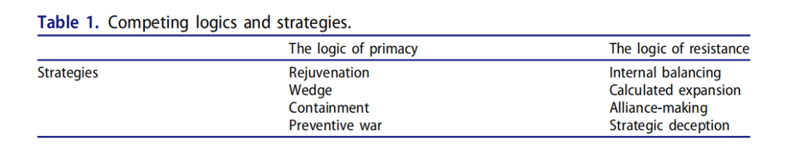
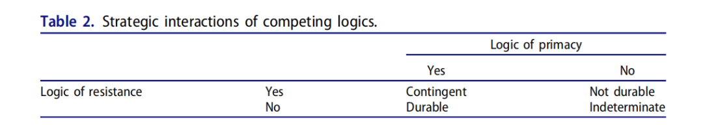

收录于合集 #理论研究 96个

作品简介
【作者】 Yuan-kang Wang，西密歇根大学政治学教授，著有《和谐与战争：儒家文化与中国权力政治》一书。
【编译】 崔宇涵（北京大学国际关系学院硕士研究生）
【校对】 王嘉许
【审核】 姚博闻
【排版】 董诗
【美编 】杜丛竹
【来源】 Yuan-kang Wang (2020) The Durability of a Unipolar System: Lessons from East Asian History, Security Studies , 29:5, 832-863, DOI: 10.1080/09636412.2020.1859127
【归档】 《国际关系前沿》2021年第4期，总第31期。
期刊简介
《安全研究》（ Security Studies ）收录出版创新性的学术稿件,包括理论研究、实践经验或两者兼有。安全研究包含广泛的议题，从核扩散、核威慑、军民关系、战略文化、种族冲突、流行病与国家安全、民主政治、外交决策到定性与多方法研究的发展。根据2018年的Journal Citation Reports，其2018年的影响因子为1.706，在91种国际关系类期刊中排名第30。
**单极体系的延续性： ******
来自东亚历史的教训
The Durability of a Unipolar System:
Lessons from East Asian History
Yuan-kang Wang
内容提要
苏联解体后美国成为唯一的超级大国，有关单极对国际关系影响的文献大量涌现。在诸多议题中，单极的 延续性（Durability） 问题引发了激烈辩论。美国单极会持续下去吗？美国如何保持其主导地位？衰退论者与主流派给出了不同的观点和论述。 衰退论者（declinists） 认为单极是短暂的，因为均势机制将很快恢复体系的均衡（equilibrium）； 主流派（primacists） 则认为美国的主导地位将持续下去，因为次强国在协调制衡联盟时面临集体行动的问题。不过，这些文献存在 普适性不足 和 防御性偏差（defensive bias） 的问题：（1）大多数论据都是专门针对美国的，难以解释其他历史案例。这种美国中心主义（Americentrism）限制了研究单极的理论可能性。（2）现有论据集中在较小国家可能采取的防御性、抗衡性（countervailing）行动上，淡化了单极可以积极保持其主导地位的可能性。为弥补上述不足，本文考察了东亚历史上的两个单极案例：明朝（1368-1644）和清朝（1644-1912）。 作者认为，单极的延续性是单极维持其权力优势的努力和潜在挑战者试图弥补力量差距这二者战略互动的结果。 当这种互动导致权力的再分配时，单极体系将会瓦解。简而言之，单极的延续性是偶然的，而非必然的。
文章导读
01
定义单极与延续性
本文将单极定义为只有一个大国的无政府体系。（1）单极是无政府的。 虽然单极体系下行为体之间存在等级关系，但它们发生在无政府状态的背景下，其中单极对其他行为体只有不完全的控制。 （2）第二，“单极”是指“由结构和相互作用的单元组成”的国际体系。 结构是指按照能力来排列单元；而单元之间规律的相互作用，使系统具有一组不同于各部分之和的特性。 （3）第三，单极体系只有一个大国。 单极在几乎所有权力领域都拥有优势，其他行为体在短期内无法赶超。尤其是，单极必须拥有比其他国家更大的军事优势。作者认为， 这一定义将单极与霸权、等级制以及帝国等概念作了清晰的区分。具体来说， 单极描述的是体系中物质能力的分布，而其他概念则指的是行为体之间的政治关系模式。换言之，这种定义区分了作为物质能力的权力和作为影响力的权力。本文关注的是物质能力的分布而非政治影响。 此外，这一定义并不要求以民族国家为基本分析单位， 从而可以将前现代的单极纳入单极理论的分析范围。
在定义体系的 延续性 方面，作者认为采用设定一个门槛来定义的定量方法过于武断且不精确，因此作者采用了一种定性定义，即 如果军事力量的基本分配能够适应次等政治单元（second-ranked political units）的挑战，那么这一单极体系就是持久的。 因此，一个单极系统能够保持动态均衡就可以被认为是持久的，尽管“不平衡和调整的过程不断发生”。
02
围绕单极延续性的争论
衰退论者 认为单极是不可持续的，并共同提出三种对抗单极的力量：一是国家倾向于与单极的权力集中相抗衡；二是单极往往会出现保罗·肯尼迪（Paul M. Kennedy）所说的“帝国过度扩张”（imperial overstretch）；三是新的强国将兴起，挑战单极。而以威廉·C·沃尔弗斯（William C. Wohlforth）为代表的 主流派 持相反观点，他们主要关注单极体系 对外部制衡的结构性抑制。 沃尔弗斯在《稳定的单极世界》一文中指出，单极的压倒性权力给次强国家带来了几乎无法克服的集体行动问题，使制衡战略的成本极高；此外，相对独立的地理位置有利于美国长期维持单极状态。 努诺·P·蒙泰罗（Nuno P. Monteiro） 则试图解决这一争论，他主要考虑核武器的影响。他认为在有核世界里，拥有二次核打击能力的国家的短期生存有核武器保障，而因为其长期生存依赖于经济增长，因此只要单极不遏制有核经济大国的经济增长、不试图改变其所在地区的现状，它们将没有动机将财富转化为军事能力制衡单极。在这种情况下，单极可能会持续下去。
正如前文所述，作者认为上述理论有两点不足。 一是难以进行推广。 例如，衰退论者认为，由于均势的规律式运作，单极将是短暂的。然而，在非西方案例（non- transatlantic）中进行检验时，均势理论难以解释非均势体系的结果。 二是对制衡机制存在防御性偏差。 争论双方的理由都建立在对制衡力量的判断之上。这种假定一方面把重点放在抗衡机制上，只能说明问题的一部分，另一方面却假定单极是一个被动的参与者。单极理论不仅要分析其他国家抵制和制衡单极的动机，更要探索单极是如何保持权力优势，保持其在体系中的地位的。 因此，需要考虑单极和挑战者之间的战略互动。

03
战略互动的 模型
在讨论单极延续性时，已有文献倾向于从结构而非 能动者（agent） 层次分析，从而忽略了行为体/能动者的战略选择。正如沃尔兹（Kenneth N. Waltz）所说：“体系的变化和转换，不是来源于系统的结构，而是来源于它的组成部分。”因此，在评估单极的延续性时，有必要把能动者带回来，并考察结构和能动者的相互作用。
单极延续性的问题最终与体系的变化有关。如果军事力量的分配发生变化，以致没有一国享有比他国更大的优势，单极体系就会结束。 吉尔平（Robert Gilpin）曾提出，体系中不同国家权力的差别性增长（differential growth）将导致权力的根本性重新分配。但这不足以充分解释单极寿命的差异，因为它没有说明在何种条件下权力的分配可能会有适应性变化。基于吉尔平的工作和许田波（Tin- bor Victoria Hui）的竞争逻辑框架，作者提出 单极的延续性
取决于单极维持其不对称权力优势的努力和挑战者缩小权力差距的努力之间的战略互动。 这一动态过程体现在 “优势”（primacy）逻辑 与 “抵抗”逻辑 之间（见表1）。
其中，优势逻辑指的是一套加强单极军事优势的战略，抵抗逻辑指的是一套提高挑战者军事能力以缩小与单极力量差距的战略。两种竞争逻辑的核心是权力和战略。单极体系建立在某种权力分配的基础上，这种权力分配可以通过参与者的战略选择而改变。如果其竞争策略的相互作用导致权力分配的实质性变化有利于挑战者，单极体系就会瓦解。否则，单极体系会持续下去。
优势逻辑
优势逻辑需要四种战略来维持单极优势： 振兴战略、楔子战略、遏制战略和预防性战争。 （1）振兴战略要求单极提升必要的技术能力，以维持经济生产力和支撑其军事优势。（2）单极可以实施楔子战略，防止形成对抗它的制衡联盟，从而保持其优势。楔子战略类似于分而治之，目的在于保持对手的弱小和分裂，从而克服国家制衡更强国的倾向。（3）单极可以实施遏制战略，遏制、挫败、削弱对手的军事力量。这一战略旨在防止对手获得过多的军事力量，威胁到单极的统治地位，通常依靠建立一个针对挑战者的制衡联盟来实现。（4）单极可以发动预防性战争，在挑战过于强大之前削弱或摧毁之。
抵抗逻辑
挑战者同样有四种战略来积累权力： 内部制衡，有计划的扩张，结盟和战略欺骗。 （1）内部制衡即设法增强自身的经济、军事实力。与外部制衡相比，内部制衡是一种更可靠的自助手段，因为它不依赖他人的帮助。实现内部平衡的关键是创新和模仿。（2）当预期收益大于预期成本时，挑战者可以通过有限但持续的扩张努力获得外部动力，积累权力。（3）挑战者可以选择结盟战略，与其他行为体共享资源，以提高其相对权力地位。虽然结盟经常遇到集体行动的问题，但挑战者并不需要对单极形成完全的制衡。（4）第四，为了避免单极的针对，挑战者可以采取欺骗的策略，使自己呈现为维持现状的行为体，并在足够强大之前隐藏其修正主义意图（revisionist intentions）。
单极的延续性
优势逻辑和抵抗逻辑的互动、重叠构成了两种竞争逻辑的战略互动（见表2）。总之，单极体系的延续性取决于单极维持其强大权力的积极措施，和强有力挑战者增加其相对权力的能力之间的战略互动。当两者的动态实力差别接近于平衡（parity）时，系统就不再是单极的了。

04
东亚历史上的单极体系
本节作者将其理论框架用于分析明清时期的东亚国际体系。作者首先指出，单极概念适用于历史上的东亚，因为它包含了单极的三个要素：无政府、相对独立的国际体系以及唯一的大国。作者选取了明清两朝的东亚来检验衰退论者、主流派以及作者提出的理论机制，突出了将单极和挑战者之间的战略互动纳入单极研究的重要性。
明朝单极
作者首先用数据表明了明朝时期中国的人口、经济以及军事优势，证明明朝在当时的东亚是无可争议的政治、经济和文化中心。明朝经济和人口的压倒性优势在东亚保持了两个世纪， 它通过振兴国力和维持高产的农业与制造业基地维持其主导地位。
**
**
此外，明朝还试图通过楔子战略、军事遏制和预防性战争应对来自蒙古，日本和满族人的挑战。对于蒙古， 明朝采取了楔子战略，防止蒙古各政权统一，并以军事围堵来削弱蒙古的权力；为了挑战明朝，蒙古人尝试通过建立统一大多数部落的联盟来实现内部制衡，并有计划地向战略要地鄂尔多斯地区扩张。最终，明朝的优势战略压倒了蒙古的抵抗战略。 日本方 向，丰臣秀吉在统一全国后开始挑战明朝在东亚的统治地位，挑起了万历朝鲜战争。明朝先后派遣上万部队援助朝鲜，直到1598年战争结束，明朝的单极地位得以保持。与应对蒙古的威胁相比，明朝对日本的应对相对被动，但其强大的军事力量和经济资源弥补了战略主动权上的不足。 满族人是最后一个挑战者。 在早期，明朝同样用楔子战略和军事打击的方法来削弱满族人。努尔哈赤则试图通过内部制衡和有计划的扩张来积累权力。他统一了女真各部落，在农业、冶铁和行政管理方面模仿明朝中国，进行制度创新，八旗制度使满族军队成为一支强大的战斗力量。满族人还利用联姻争取到了蒙古。最重要的是，满族人成功实施了战略欺骗避免了明朝的军事遏制。同时期的明朝却没有遵循优势逻辑，在满族人的崛起的同时，朝廷陷入党争和分裂，僵化的政治制度滋生了腐败和逃税，政府则不断向农民征收重税，最终导致农民起义。
解释明朝单极
作者认为，明朝能够维持单极地位200多年，是明朝努力延长其统治地位和其挑战者应对水平之间战略互动的结果。振兴战略使明朝维持了对其他国家的经济、军事优势，楔子战略、遏制和预防性战争又进一步巩固了明朝的权力地位，延长了其单极的寿命。而明朝单极的结束则是因为满族人成功运用了抵抗逻辑的全部策略，明朝却没有遵循优势逻辑的要求。
从理论检验的角度看，衰退论者提出的制衡机制和过度扩张机制都无法解释明朝单极的延续，但主流派的观点也未必得到了证明。明朝单极之所以持久，并非因为缺乏外部制衡，而是因为明朝对优势逻辑的强烈追求；此外，主流派的观点也没有考虑到次强行为体的战略是终止单极的潜在途径，正如满族人的崛起那样。
清朝单极
作者将1683年清朝收复台湾作为其单极体系的起点。与明朝类似，清朝的人口和GDP总量在东亚占据绝对优势，清朝也采取了多种维持和延长其统治地位的措施。清朝的主要威胁来自 准噶尔汗国 ，其在内亚腹地的建国努力对清朝的统治构成了生存威胁。另一个安全威胁是扩张到了西伯利亚的 沙皇俄国 。上述三国的互动开启了东亚地缘政治竞争的新时代。
清朝的首要安全关切是准噶尔- 沙俄结盟的可能。为此，清廷采用了楔子策略挑拨两个对手的关系，而与沙俄和平共处将使清廷能够集中精力对付来自准噶尔的主要威胁。1689年，清朝政府与沙俄政府签署了《尼布楚条约》，划定了远东地区的边界，并给予俄罗斯在中国的贸易特权，清廷则在准噶尔问题上获得了俄罗斯的中立。为了提高自身的战略地位，清朝还兼并了外蒙古和西藏地区。最终，清历经三代统一了准噶尔。清朝的单极地位结束于鸦片战争，工业革命改变了军事技术的性质，暴露了清军军事力量的落后。
解释清朝单极
作者认为，清朝单极之所以持久，是因为它全盘接受了优势逻辑的战略，而准噶尔人则部分接受了抵抗的逻辑。与明朝的案例一样，衰退论者的论点不能充分解释清王朝的单极；清朝的长期统治也不是由于主流派提出的对外部制衡的结构性抑制。
05
对美国单极的启示
作者认为本文的研究对于美国有重要政策意义。作者指出中国是最有潜力挑战美国主导地位的国家，并且近几年在外交政策上逐渐转向更为自信的立场。而美国则尚未完全接受优势逻辑，并认为，美国过去20多年的对华“接触”政策是失败的。
作者认为，为了保持美国的优势地位，美国需要：（1）通过保持在技术领域的领先来振兴经济，并在发展足够的军事力量和保持强劲的经济增长之间取得平衡。此外，要将战略重心转移到亚洲。（2）采取楔子战略打破正在形成的中俄同盟。地缘邻近可能使中国和俄罗斯成为潜在对手，美国则应该利用这种潜在的分歧。（3）保持军队的前沿部署，并与地区盟友和伙伴协调，以构建一个制衡联盟，以遏制中国力量的扩张。
译者评述
自冷战结束、美国成为单极之后，关于美国单极的讨论一直没有停止。本文作者着眼于单极持续时间的议题，认为目前西方学界关于单极体系的争论存在两个问题：一是可供讨论的案例几乎仅有美国一个，二是受均势理论和思维的影响，过于关注对单极的外部制衡而忽略了单极国家本身。因此，作者将目光放到了明清时期的东亚，希望通过引入更多的历史案例，并从能动者（agent）层次出发讨论单极国家策略选择的作用，来修正上述问题，从理论建构的角度上讲是一种有益尝试。
但同时，编译者认为，这篇文章也有一些不足。第一是概念方面。在定义“单极”时，作者一方面限定单极是无政府状态下的单极，但另一方面却指出自己对单极的定义仅限物质实力，不涉及行为体间的政治关系，还特别指出其与无政府的反面——等级制的区分，逻辑上有些不自洽。此外，这种仅以物质实力界定的单极概念，会缺少意识形态这一重要维度，在编译者看来，不论是儒家文明对明清朝贡体系，还是新自由主义意识形态对美国单极，都有着很重要的影响。第二，忽视了决策者策略选择的限制。在作者研究的明清两朝案例中可以发现，统治者在王朝初创或鼎盛时期就能遵循所谓“优势”逻辑打击挑战者，而在王朝衰败时则无法遵循这一逻辑直至被挑战者取代。这是否说明，根本问题并不是策略选择，而更多地是国力强弱，或者说是国内政治社会结构对决策者的结构性约束呢？从这一角度讲，对待历史上极少出现的单极国家，还需要对每一个案例的国内政治过程做具体的研究分析，而非急于抽象出一般理论。
文章观点不代表本平台观点，本平台评译分享的文章均出于专业学习之用, 不以任何盈利为目的，内容主要呈现对原文的介绍，原文内容请通过各高校购买的数据库自行下载。
好好学习，天天“在看”
国政学人
支持学术公益与知识传播
微信扫一扫赞赏作者 __赞赏
已喜欢，对作者说句悄悄话
取消 __
发送给作者
发送
最多40字，当前共字
上一页 1/3 下一页
长按二维码向我转账
支持学术公益与知识传播
受苹果公司新规定影响，微信 iOS 版的赞赏功能被关闭，可通过二维码转账支持公众号。